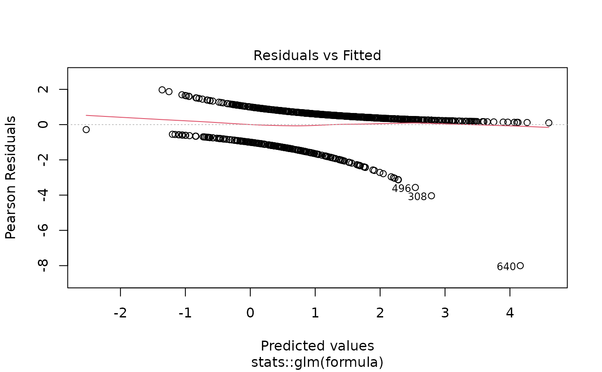
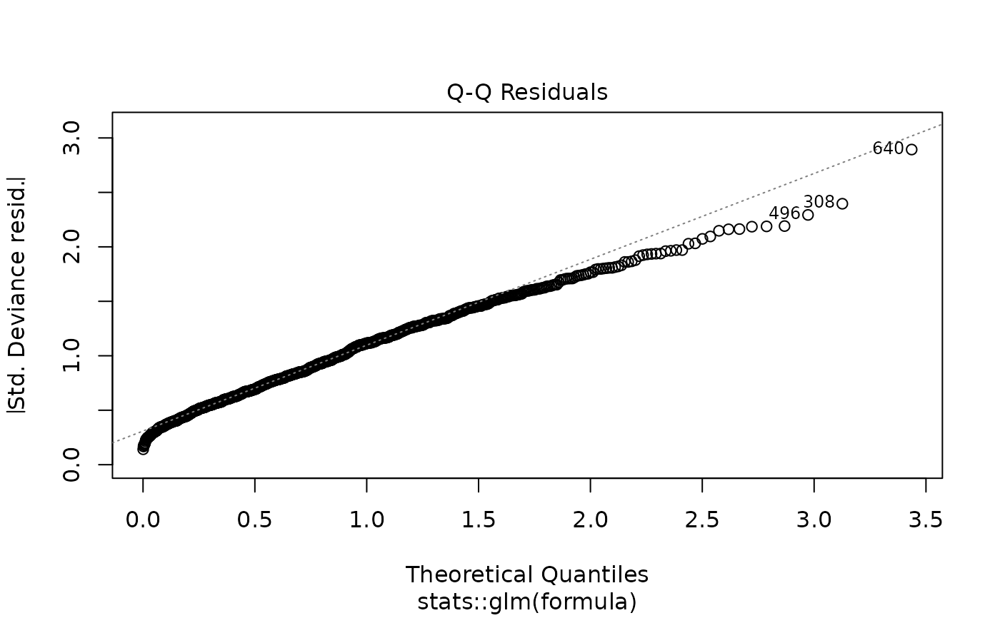
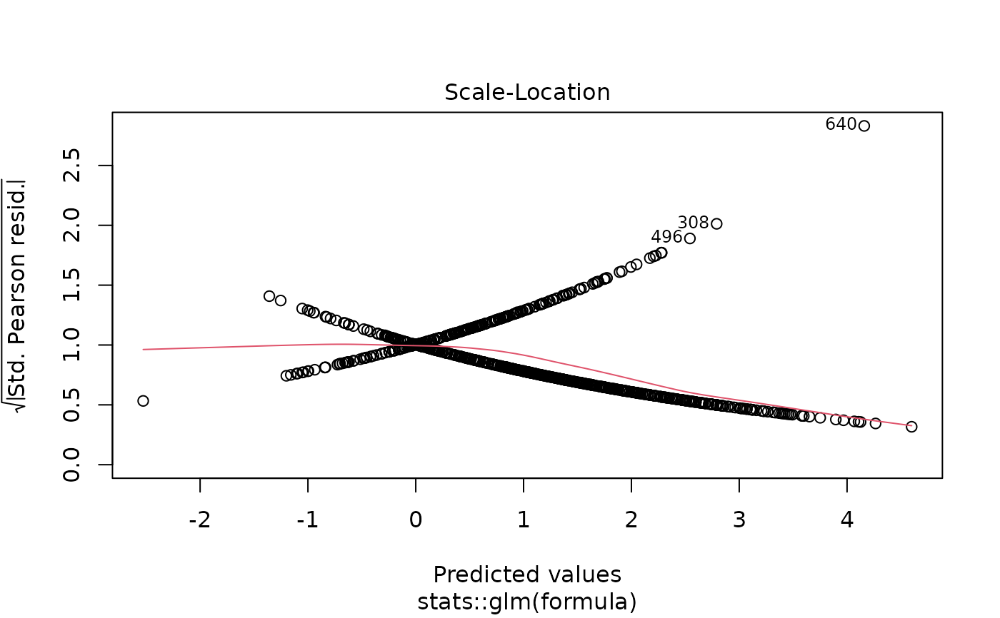
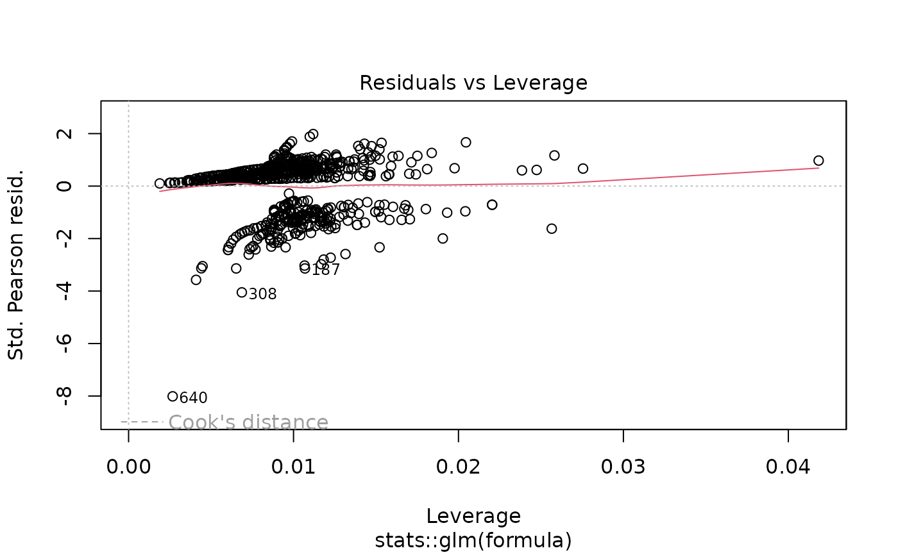

Executes a comprehensive regression analysis pipeline that combines univariable screening, automatic/manual variable selection, and multivariable modeling in a single function call. This function is designed to streamline the complete analytical workflow from initial exploration to final adjusted models, with publication-ready formatted output showing both univariable and multivariable results side-by-side if desired.
Usage
fullfit(
data,
outcome,
predictors,
method = "screen",
multi_predictors = NULL,
p_threshold = 0.05,
columns = "both",
model_type = "glm",
family = "binomial",
random = NULL,
conf_level = 0.95,
reference_rows = TRUE,
show_n = TRUE,
show_events = TRUE,
digits = 2,
p_digits = 3,
labels = NULL,
metrics = "both",
return_type = "table",
keep_models = FALSE,
exponentiate = NULL,
parallel = TRUE,
n_cores = NULL,
number_format = NULL,
verbose = NULL,
...
)Arguments
- data
Data frame or data.table containing the analysis dataset. The function automatically converts data frames to data.tables for efficient processing.
- outcome
Character string specifying the outcome variable name. For time-to-event analysis, use
Surv()syntax for the outcome variable (e.g.,"Surv(os_months, os_status)").- predictors
Character vector of predictor variable names to analyze. All predictors are tested in univariable models. The subset included in the multivariable model depends on the
methodparameter.- method
Character string specifying the variable selection strategy:
"screen"- Automatic selection based on univariable p-value threshold. Only predictors with p ≤p_thresholdin univariable analysis are included in the multivariable model [default]"all"- Include all predictors in both univariable and multivariable analyses (no selection)"custom"- Manual selection. All predictors in univariable analysis, but only those specified inmulti_predictorsare included in multivariable model
- multi_predictors
Character vector of predictors to include in the multivariable model when
method = "custom". Required when using custom selection. Ignored for other methods. Default isNULL.- p_threshold
Numeric p-value threshold for automatic variable selection when
method = "screen". Predictors with univariable p-value less than the threshold are included in multivariable model. Common values: 0.05 (strict), 0.10 (moderate), 0.20 (liberal screening). Default is 0.05. Ignored for other methods.- columns
Character string specifying which result columns to display:
"both"- Show both univariable and multivariable results side-by-side [default]"uni"- Show only univariable results"multi"- Show only multivariable results
- model_type
Character string specifying the regression model type:
"glm"- Generalized linear model (default). Supports multiple distributions via thefamilyparameter including logistic, Poisson, Gamma, Gaussian, and quasi-likelihood models."lm"- Linear regression for continuous outcomes with normally distributed errors."coxph"- Cox proportional hazards model for time-to-event survival analysis. RequiresSurv()outcome syntax."clogit"- Conditional logistic regression for matched case-control studies."negbin"- Negative binomial regression for overdispersed count data (requires MASS package). Estimates an additional dispersion parameter compared to Poisson regression."glmer"- Generalized linear mixed-effects model for hierarchical or clustered data with non-normal outcomes (requires lme4 package andrandomparameter)."lmer"- Linear mixed-effects model for hierarchical or clustered data with continuous outcomes (requires lme4 package andrandomparameter)."coxme"- Cox mixed-effects model for clustered survival data (requires coxme package andrandomparameter).
- family
For GLM and GLMER models, specifies the error distribution and link function. Can be a character string, a family function, or a family object. Ignored for non-GLM/GLMER models.
Binary/Binomial outcomes:
"binomial"orbinomial()- Logistic regression for binary outcomes (0/1, TRUE/FALSE). Returns odds ratios (OR). Default."quasibinomial"orquasibinomial()- Logistic regression with overdispersion. Use when residual deviance >> residual df.binomial(link = "probit")- Probit regression (normal CDF link).binomial(link = "cloglog")- Complementary log-log link for asymmetric binary outcomes.
Count outcomes:
"poisson"orpoisson()- Poisson regression for count data. Returns rate ratios (RR). Assumes mean = variance."quasipoisson"orquasipoisson()- Poisson regression with overdispersion. Use when variance > mean.
Continuous outcomes:
"gaussian"orgaussian()- Normal/Gaussian distribution for continuous outcomes. Equivalent to linear regression.gaussian(link = "log")- Log-linear model for positive continuous outcomes. Returns multiplicative effects.
Positive continuous outcomes:
"Gamma"orGamma()- Gamma distribution for positive, right-skewed continuous data (e.g., costs, lengths of stay). Default log link.Gamma(link = "inverse")- Gamma with inverse (canonical) link.Gamma(link = "identity")- Gamma with identity link for additive effects on positive outcomes."inverse.gaussian"orinverse.gaussian()- Inverse Gaussian for positive, highly right-skewed data.
For negative binomial regression (overdispersed counts), use
model_type = "negbin"instead of thefamilyparameter.See
familyfor additional details and options.- random
Character string specifying the random-effects formula for mixed-effects models (
glmer,lmer,coxme). Use standard lme4/coxme syntax, e.g.,"(1|site)"for random intercepts by site,"(1|site/patient)"for nested random effects. Required whenmodel_typeis a mixed-effects model type unless random effects are included in thepredictorsvector. Alternatively, random effects can be included directly in thepredictorsvector using the same syntax (e.g.,predictors = c("age", "sex", "(1|site)")), though they will not be screened as predictors. Default isNULL.- conf_level
Numeric confidence level for confidence intervals. Must be between 0 and 1. Default is 0.95 (95% CI).
- reference_rows
Logical. If
TRUE, adds rows for reference categories of factor variables with baseline values. Default isTRUE.- show_n
Logical. If
TRUE, includes sample size columns. Default isTRUE.- show_events
Logical. If
TRUE, includes events columns (survival and logistic models). Default isTRUE.- digits
Integer specifying decimal places for effect estimates. Default is 2.
- p_digits
Integer specifying the number of decimal places for p-values. Values smaller than
10^(-p_digits)are displayed as"< 0.001"(forp_digits = 3),"< 0.0001"(forp_digits = 4), etc. Default is 3.- labels
Named character vector or list providing custom display labels for variables. Names should match variable names, values are display labels. Default is
NULL.- metrics
Character specification for which statistics to display:
"both"- Show effect estimates with CI and p-values [default]"effect"- Show only effect estimates with CI"p"- Show only p-values
Can also be a character vector:
c("effect", "p")is equivalent to"both".- return_type
Character string specifying what to return:
"table"- Return formatted results table only [default]"model"- Return multivariable model object only"both"- Return list with both table and model
- keep_models
Logical. If
TRUE, stores univariable model objects in the output. Can consume significant memory for many predictors. Default isFALSE.- exponentiate
Logical. Whether to exponentiate coefficients. Default is
NULL, which automatically exponentiates for logistic, Poisson, and Cox models, and displays raw coefficients for linear models.- parallel
Logical. If
TRUE(default), fits univariable models in parallel using multiple CPU cores for improved performance.- n_cores
Integer specifying the number of CPU cores to use for parallel processing. Default is
NULL(auto-detect: usesdetectCores() - 1). Ignored whenparallel = FALSE.- number_format
Character string or two-element character vector controlling thousand and decimal separators in formatted output. Named presets:
"us"- Comma thousands, period decimal:1,234.56[default]"eu"- Period thousands, comma decimal:1.234,56"space"- Thin-space thousands, period decimal:1 234.56(SI/ISO 31-0)"none"- No thousands separator:1234.56
Or provide a custom two-element vector
c(big.mark, decimal.mark), e.g.,c("'", ".")for Swiss-style:1'234.56.When
NULL(default), usesgetOption("summata.number_format", "us"). Set the global option once per session to avoid passing this argument repeatedly:options(summata.number_format = "eu")- verbose
Logical. If
TRUE, displays model fitting warnings (e.g., singular fit, convergence issues). IfFALSE(default), routine fitting messages are suppressed while unexpected warnings are preserved. WhenNULL, usesgetOption("summata.verbose", FALSE).- ...
Additional arguments passed to model fitting functions (e.g.,
weights,subset,na.action).
Value
Depends on return_type parameter:
When return_type = "table" (default): A data.table with S3 class
"fullfit_result" containing:
- Variable
Character. Predictor name or custom label
- Group
Character. Category level for factors, empty for continuous
- n/n_group
Integer. Sample sizes (if
show_n = TRUE)- events/events_group
Integer. Event counts (if
show_events = TRUE)- OR/HR/RR/Coefficient (95% CI)
Character. Unadjusted effect (if
columnsincludes "uni" andmetricsincludes "effect")- Uni p
Character. Univariable p-value (if
columnsincludes "uni" andmetricsincludes "p")- aOR/aHR/aRR/Adj. Coefficient (95% CI)
Character. Adjusted effect (if
columnsincludes "multi" andmetricsincludes "effect")- Multi p
Character. Multivariable p-value (if
columnsincludes "multi" andmetricsincludes "p")
When return_type = "model": The fitted multivariable model object
(glm, lm, coxph, etc.).
When return_type = "both": A list with two elements:
- table
The formatted results data.table
- model
The fitted multivariable model object
The table includes the following attributes:
- outcome
Character. The outcome variable name
- model_type
Character. The regression model type
- method
Character. The variable selection method used
- columns
Character. Which columns were displayed
- model
The multivariable model object (if fitted)
- uni_results
The complete univariable screening results
- n_multi
Integer. Number of predictors in multivariable model
- screened
Character vector. Names of predictors that passed univariable screening at the specified p-value threshold
- significant
Character vector. Names of variables with p < 0.05 in the multivariable model (or univariable if multivariable was not fitted)
Details
Analysis Workflow:
The function implements a complete regression analysis pipeline:
Univariable screening: Fits separate models for each predictor (outcome ~ predictor). Each predictor is tested independently to understand crude associations.
Variable selection: Based on the
methodparameter:"screen": Automatically selects predictors with univariable p ≤p_threshold"all": Includes all predictors (no selection)"custom": Uses predictors specified inmulti_predictors
Multivariable modeling: Fits a single model with selected predictors (outcome ~ predictor1 + predictor2 + ...). Estimates are adjusted for all other variables in the model.
Output formatting: Combines results into publication-ready table with appropriate effect measures and formatting.
Variable Selection Strategies:
"Screen" Method (method = "screen"):
Uses p-value threshold for automatic selection
Liberal thresholds (e.g., 0.20) cast a wide net to avoid missing important predictors
Stricter thresholds (e.g., 0.05) focus on strongly associated predictors
Helps reduce overfitting and multicollinearity
Common in exploratory analyses and when sample size is limited
"All" Method (method = "all"):
No variable selection - includes all predictors
Appropriate when all variables are theoretically important
Risk of overfitting with many predictors relative to sample size
Useful for confirmatory analyses with pre-specified models
"Custom" Method (method = "custom"):
Manual selection based on subject matter knowledge
Runs univariable analysis for all predictors (for comparison)
Includes only specified predictors in multivariable model
Ideal for theory-driven model building
Allows comparison of unadjusted vs adjusted effects for all variables
Interpreting Results:
When columns = "both" (default), tables show:
Univariable columns: Crude associations, unadjusted for other variables. Labeled as "OR/HR/RR/Coefficient (95% CI)" and "Uni p"
Multivariable columns: Adjusted associations, accounting for all other predictors in the model. Labeled as "aOR/aHR/aRR/Adj. Coefficient (95% CI)" and "Multi p" ("a" = adjusted)
Variables not meeting selection criteria show "-" in multivariable columns
Comparing univariable and multivariable results helps identify:
Confounding: Large changes in effect estimates
Independent effects: Similar univariable and multivariable estimates
Mediation: Attenuated effects in multivariable model
Suppression: Effects that emerge only after adjustment
Sample Size Considerations:
Rule of thumb for multivariable models:
Logistic regression: ≥ 10 events per predictor variable
Cox regression: ≥ 10 events per predictor variable
Linear regression: ≥ 10-20 observations per predictor
Use screening methods to reduce predictor count when these ratios are not met.
See also
uniscreen for univariable screening only,
fit for fitting a single multivariable model,
compfit for comparing multiple models,
desctable for descriptive statistics
Other regression functions:
compfit(),
fit(),
multifit(),
print.compfit_result(),
print.fit_result(),
print.fullfit_result(),
print.multifit_result(),
print.uniscreen_result(),
uniscreen()
Examples
# Load example data
data(clintrial)
data(clintrial_labels)
library(survival)
# Example 1: Basic screening with p < 0.05 threshold
result1 <- fullfit(
data = clintrial,
outcome = "os_status",
predictors = c("age", "sex", "bmi", "smoking", "hypertension",
"diabetes", "treatment", "stage"),
method = "screen",
p_threshold = 0.05,
labels = clintrial_labels
)
#> Running univariable analysis...
#> Fitting multivariable model with 5 predictors...
print(result1)
#>
#> Fullfit Analysis Results
#> Outcome: os_status
#> Model Type: glm
#> Method: screen (p < 0.05)
#> Predictors Screened: 8
#> Multivariable Predictors: 5
#>
#> Variable Group n Events OR (95% CI) Uni p aOR (95% CI) Multi p
#> <char> <char> <char> <char> <char> <char> <char> <char>
#> 1: Age (years) - 850 609 1.05 (1.03-1.06) < 0.001 1.05 (1.04-1.07) < 0.001
#> 2: Sex Female 450 298 reference - reference -
#> 3: Male 400 311 1.78 (1.31-2.42) < 0.001 1.98 (1.41-2.77) < 0.001
#> 4: Body Mass Index (kg/m²) - 838 599 1.01 (0.98-1.05) 0.347 - -
#> 5: Smoking Status Never 337 248 reference - reference -
#> 6: Former 311 203 0.67 (0.48-0.94) 0.022 0.72 (0.50-1.05) 0.087
#> 7: Current 185 143 1.22 (0.80-1.86) 0.351 1.38 (0.88-2.18) 0.162
#> 8: Hypertension No 504 354 reference - - -
#> 9: Yes 331 242 1.15 (0.85-1.57) 0.369 - -
#> 10: Diabetes No 637 457 reference - - -
#> 11: Yes 197 138 0.92 (0.65-1.31) 0.646 - -
#> 12: Treatment Group Control 196 151 reference - reference -
#> 13: Drug A 292 184 0.51 (0.34-0.76) 0.001 0.44 (0.28-0.68) < 0.001
#> 14: Drug B 362 274 0.93 (0.62-1.40) 0.721 0.77 (0.49-1.21) 0.251
#> 15: Disease Stage I 211 127 reference - reference -
#> 16: II 263 172 1.25 (0.86-1.82) 0.243 1.26 (0.84-1.90) 0.263
#> 17: III 241 186 2.24 (1.49-3.36) < 0.001 2.54 (1.63-3.97) < 0.001
#> 18: IV 132 121 7.28 (3.70-14.30) < 0.001 8.61 (4.25-17.47) < 0.001
# Shows both univariable and multivariable results
# Only significant univariable predictors in multivariable model
# \donttest{
# Example 2: Liberal screening threshold (p < 0.20)
result2 <- fullfit(
data = clintrial,
outcome = "os_status",
predictors = c("age", "sex", "bmi", "smoking", "hypertension",
"diabetes", "ecog", "treatment", "stage", "grade"),
method = "screen",
p_threshold = 0.20, # More liberal for screening
labels = clintrial_labels
)
#> Running univariable analysis...
#> Fitting multivariable model with 7 predictors...
print(result2)
#>
#> Fullfit Analysis Results
#> Outcome: os_status
#> Model Type: glm
#> Method: screen (p < 0.2)
#> Predictors Screened: 10
#> Multivariable Predictors: 7
#>
#> Variable Group n Events OR (95% CI) Uni p aOR (95% CI) Multi p
#> <char> <char> <char> <char> <char> <char> <char> <char>
#> 1: Age (years) - 850 609 1.05 (1.03-1.06) < 0.001 1.06 (1.04-1.08) < 0.001
#> 2: Sex Female 450 298 reference - reference -
#> 3: Male 400 311 1.78 (1.31-2.42) < 0.001 2.09 (1.46-2.98) < 0.001
#> 4: Body Mass Index (kg/m²) - 838 599 1.01 (0.98-1.05) 0.347 - -
#> 5: Smoking Status Never 337 248 reference - reference -
#> 6: Former 311 203 0.67 (0.48-0.94) 0.022 0.72 (0.49-1.06) 0.097
#> 7: Current 185 143 1.22 (0.80-1.86) 0.351 1.37 (0.85-2.20) 0.197
#> 8: Hypertension No 504 354 reference - - -
#> 9: Yes 331 242 1.15 (0.85-1.57) 0.369 - -
#> 10: Diabetes No 637 457 reference - - -
#> 11: Yes 197 138 0.92 (0.65-1.31) 0.646 - -
#> 12: ECOG Performance Status 0 265 159 reference - reference -
#> 13: 1 302 212 1.57 (1.11-2.22) 0.011 1.88 (1.26-2.81) 0.002
#> 14: 2 238 194 2.94 (1.95-4.43) < 0.001 3.78 (2.37-6.02) < 0.001
#> 15: 3 37 37 10434240.53 (0.00-Inf) 0.967 40085625.57 (0.00-Inf) 0.976
#> 16: Treatment Group Control 196 151 reference - reference -
#> 17: Drug A 292 184 0.51 (0.34-0.76) 0.001 0.38 (0.23-0.61) < 0.001
#> 18: Drug B 362 274 0.93 (0.62-1.40) 0.721 0.72 (0.45-1.15) 0.168
#> 19: Disease Stage I 211 127 reference - reference -
#> 20: II 263 172 1.25 (0.86-1.82) 0.243 1.33 (0.86-2.04) 0.201
#> 21: III 241 186 2.24 (1.49-3.36) < 0.001 2.72 (1.70-4.36) < 0.001
#> 22: IV 132 121 7.28 (3.70-14.30) < 0.001 10.52 (5.06-21.90) < 0.001
#> 23: Tumor Grade Well-differentiated 153 95 reference - reference -
#> 24: Moderately differentiated 412 297 1.58 (1.07-2.33) 0.023 1.93 (1.22-3.06) 0.005
#> 25: Poorly differentiated 275 208 1.90 (1.24-2.91) 0.003 2.53 (1.53-4.20) < 0.001
#> Variable Group n Events OR (95% CI) Uni p aOR (95% CI) Multi p
#> <char> <char> <char> <char> <char> <char> <char> <char>
# Example 3: Include all predictors (no selection)
result3 <- fullfit(
data = clintrial,
outcome = "os_status",
predictors = c("age", "sex", "treatment", "stage"),
method = "all",
labels = clintrial_labels
)
#> Running univariable analysis...
#> Fitting multivariable model with 4 predictors...
print(result3)
#>
#> Fullfit Analysis Results
#> Outcome: os_status
#> Model Type: glm
#> Method: all
#> Predictors Screened: 4
#> Multivariable Predictors: 4
#>
#> Variable Group n Events OR (95% CI) Uni p aOR (95% CI) Multi p
#> <char> <char> <char> <char> <char> <char> <char> <char>
#> 1: Age (years) - 850 609 1.05 (1.03-1.06) < 0.001 1.05 (1.04-1.07) < 0.001
#> 2: Sex Female 450 298 reference - reference -
#> 3: Male 400 311 1.78 (1.31-2.42) < 0.001 2.02 (1.45-2.82) < 0.001
#> 4: Treatment Group Control 196 151 reference - reference -
#> 5: Drug A 292 184 0.51 (0.34-0.76) 0.001 0.44 (0.28-0.68) < 0.001
#> 6: Drug B 362 274 0.93 (0.62-1.40) 0.721 0.74 (0.48-1.16) 0.192
#> 7: Disease Stage I 211 127 reference - reference -
#> 8: II 263 172 1.25 (0.86-1.82) 0.243 1.32 (0.88-1.97) 0.181
#> 9: III 241 186 2.24 (1.49-3.36) < 0.001 2.70 (1.74-4.19) < 0.001
#> 10: IV 132 121 7.28 (3.70-14.30) < 0.001 9.08 (4.49-18.37) < 0.001
# All predictors in both analyses
# Example 4: Custom variable selection
result4 <- fullfit(
data = clintrial,
outcome = "os_status",
predictors = c("age", "sex", "bmi", "smoking", "treatment", "stage"),
method = "custom",
multi_predictors = c("age", "treatment", "stage"), # Manual selection
labels = clintrial_labels
)
#> Running univariable analysis...
#> Fitting multivariable model with 3 predictors...
print(result4)
#>
#> Fullfit Analysis Results
#> Outcome: os_status
#> Model Type: glm
#> Method: custom
#> Predictors Screened: 6
#> Multivariable Predictors: 3
#>
#> Variable Group n Events OR (95% CI) Uni p aOR (95% CI) Multi p
#> <char> <char> <char> <char> <char> <char> <char> <char>
#> 1: Age (years) - 850 609 1.05 (1.03-1.06) < 0.001 1.05 (1.04-1.07) < 0.001
#> 2: Sex Female 450 298 reference - - -
#> 3: Male 400 311 1.78 (1.31-2.42) < 0.001 - -
#> 4: Body Mass Index (kg/m²) - 838 599 1.01 (0.98-1.05) 0.347 - -
#> 5: Smoking Status Never 337 248 reference - - -
#> 6: Former 311 203 0.67 (0.48-0.94) 0.022 - -
#> 7: Current 185 143 1.22 (0.80-1.86) 0.351 - -
#> 8: Treatment Group Control 196 151 reference - reference -
#> 9: Drug A 292 184 0.51 (0.34-0.76) 0.001 0.44 (0.28-0.68) < 0.001
#> 10: Drug B 362 274 0.93 (0.62-1.40) 0.721 0.78 (0.50-1.20) 0.260
#> 11: Disease Stage I 211 127 reference - reference -
#> 12: II 263 172 1.25 (0.86-1.82) 0.243 1.31 (0.88-1.95) 0.181
#> 13: III 241 186 2.24 (1.49-3.36) < 0.001 2.56 (1.66-3.94) < 0.001
#> 14: IV 132 121 7.28 (3.70-14.30) < 0.001 8.43 (4.20-16.92) < 0.001
# Univariable for all, multivariable for selected only
# Example 5: Cox regression with screening
cox_result <- fullfit(
data = clintrial,
outcome = "Surv(os_months, os_status)",
predictors = c("age", "sex", "bmi", "treatment", "stage", "grade"),
model_type = "coxph",
method = "screen",
p_threshold = 0.10,
labels = clintrial_labels
)
#> Running univariable analysis...
#> Fitting multivariable model with 5 predictors...
print(cox_result)
#>
#> Fullfit Analysis Results
#> Outcome: Surv(os_months, os_status)
#> Model Type: coxph
#> Method: screen (p < 0.1)
#> Predictors Screened: 6
#> Multivariable Predictors: 5
#>
#> Variable Group n Events HR (95% CI) Uni p aHR (95% CI) Multi p
#> <char> <char> <char> <char> <char> <char> <char> <char>
#> 1: Age (years) - 850 609 1.03 (1.03-1.04) < 0.001 1.04 (1.03-1.04) < 0.001
#> 2: Sex Female 450 298 reference - reference -
#> 3: Male 400 311 1.30 (1.11-1.53) 0.001 1.36 (1.15-1.59) < 0.001
#> 4: Body Mass Index (kg/m²) - 838 599 1.01 (0.99-1.03) 0.312 - -
#> 5: Treatment Group Control 196 151 reference - reference -
#> 6: Drug A 292 184 0.64 (0.52-0.80) < 0.001 0.54 (0.44-0.68) < 0.001
#> 7: Drug B 362 274 0.94 (0.77-1.15) 0.567 0.79 (0.64-0.97) 0.023
#> 8: Disease Stage I 211 127 reference - reference -
#> 9: II 263 172 1.12 (0.89-1.41) 0.337 1.16 (0.92-1.47) 0.198
#> 10: III 241 186 1.69 (1.35-2.11) < 0.001 1.87 (1.48-2.35) < 0.001
#> 11: IV 132 121 3.18 (2.47-4.09) < 0.001 3.60 (2.78-4.65) < 0.001
#> 12: Tumor Grade Well-differentiated 153 95 reference - reference -
#> 13: Moderately differentiated 412 297 1.36 (1.08-1.71) 0.010 1.40 (1.11-1.77) 0.005
#> 14: Poorly differentiated 275 208 1.62 (1.27-2.06) < 0.001 1.71 (1.34-2.19) < 0.001
# Returns hazard ratios (HR/aHR)
# Example 6: Show only multivariable results
multi_only <- fullfit(
data = clintrial,
outcome = "os_status",
predictors = c("age", "sex", "treatment", "stage"),
method = "all",
columns = "multi", # Multivariable results only
labels = clintrial_labels
)
#> Fitting multivariable model with 4 predictors...
print(multi_only)
#>
#> Fullfit Analysis Results
#> Outcome: os_status
#> Model Type: glm
#> Method: all
#> Predictors Screened: 4
#> Multivariable Predictors: 4
#>
#> Variable Group n Events aOR (95% CI) p-value
#> <char> <char> <char> <char> <char> <char>
#> 1: Age (years) - 847 606 1.05 (1.04-1.07) < 0.001
#> 2: Sex Female 449 297 reference -
#> 3: Male 398 309 2.02 (1.45-2.82) < 0.001
#> 4: Treatment Group Control 194 149 reference -
#> 5: Drug A 292 184 0.44 (0.28-0.68) < 0.001
#> 6: Drug B 361 273 0.74 (0.48-1.16) 0.192
#> 7: Disease Stage I 211 127 reference -
#> 8: II 263 172 1.32 (0.88-1.97) 0.181
#> 9: III 241 186 2.70 (1.74-4.19) < 0.001
#> 10: IV 132 121 9.08 (4.49-18.37) < 0.001
# Example 7: Show only univariable results
uni_only <- fullfit(
data = clintrial,
outcome = "os_status",
predictors = c("age", "sex", "treatment", "stage"),
columns = "uni", # Univariable results only
labels = clintrial_labels
)
#> Running univariable analysis...
print(uni_only)
#>
#> Fullfit Analysis Results
#> Outcome: os_status
#> Model Type: glm
#> Method: screen (p < 0.05)
#> Predictors Screened: 4
#>
#> Variable Group n Events OR (95% CI) p-value
#> <char> <char> <char> <char> <char> <char>
#> 1: Age (years) - 850 609 1.05 (1.03-1.06) < 0.001
#> 2: Sex Female 450 298 reference -
#> 3: Male 400 311 1.78 (1.31-2.42) < 0.001
#> 4: Treatment Group Control 196 151 reference -
#> 5: Drug A 292 184 0.51 (0.34-0.76) 0.001
#> 6: Drug B 362 274 0.93 (0.62-1.40) 0.721
#> 7: Disease Stage I 211 127 reference -
#> 8: II 263 172 1.25 (0.86-1.82) 0.243
#> 9: III 241 186 2.24 (1.49-3.36) < 0.001
#> 10: IV 132 121 7.28 (3.70-14.30) < 0.001
# Example 8: Show only effect estimates (no p-values)
effects_only <- fullfit(
data = clintrial,
outcome = "os_status",
predictors = c("age", "sex", "treatment"),
metrics = "effect", # Effect estimates only
labels = clintrial_labels
)
#> Running univariable analysis...
#> Fitting multivariable model with 3 predictors...
print(effects_only)
#>
#> Fullfit Analysis Results
#> Outcome: os_status
#> Model Type: glm
#> Method: screen (p < 0.05)
#> Predictors Screened: 3
#> Multivariable Predictors: 3
#>
#> Variable Group n Events OR (95% CI) aOR (95% CI)
#> <char> <char> <char> <char> <char> <char>
#> 1: Age (years) - 850 609 1.05 (1.03-1.06) 1.05 (1.04-1.07)
#> 2: Sex Female 450 298 reference reference
#> 3: Male 400 311 1.78 (1.31-2.42) 1.83 (1.33-2.52)
#> 4: Treatment Group Control 196 151 reference reference
#> 5: Drug A 292 184 0.51 (0.34-0.76) 0.48 (0.31-0.73)
#> 6: Drug B 362 274 0.93 (0.62-1.40) 0.86 (0.56-1.32)
# Example 9: Show only p-values (no effect estimates)
pvals_only <- fullfit(
data = clintrial,
outcome = "os_status",
predictors = c("age", "sex", "treatment"),
metrics = "p", # P-values only
labels = clintrial_labels
)
#> Running univariable analysis...
#> Fitting multivariable model with 3 predictors...
print(pvals_only)
#>
#> Fullfit Analysis Results
#> Outcome: os_status
#> Model Type: glm
#> Method: screen (p < 0.05)
#> Predictors Screened: 3
#> Multivariable Predictors: 3
#>
#> Variable Group n Events Uni p Multi p
#> <char> <char> <char> <char> <char> <char>
#> 1: Age (years) - 850 609 < 0.001 < 0.001
#> 2: Sex Female 450 298 - -
#> 3: Male 400 311 < 0.001 < 0.001
#> 4: Treatment Group Control 196 151 - -
#> 5: Drug A 292 184 0.001 < 0.001
#> 6: Drug B 362 274 0.721 0.492
# Example 10: Return both table and model object
both <- fullfit(
data = clintrial,
outcome = "os_status",
predictors = c("age", "sex", "treatment", "stage"),
method = "all",
return_type = "both"
)
#> Running univariable analysis...
#> Fitting multivariable model with 4 predictors...
# Access the table
print(both$table)
#>
#> Fullfit Analysis Results
#> Outcome: os_status
#> Model Type: glm
#> Method: all
#> Predictors Screened: 4
#> Multivariable Predictors: 4
#>
#> Variable Group n Events OR (95% CI) Uni p aOR (95% CI) Multi p
#> <char> <char> <char> <char> <char> <char> <char> <char>
#> 1: age - 850 609 1.05 (1.03-1.06) < 0.001 1.05 (1.04-1.07) < 0.001
#> 2: sex Female 450 298 reference - reference -
#> 3: Male 400 311 1.78 (1.31-2.42) < 0.001 2.02 (1.45-2.82) < 0.001
#> 4: treatment Control 196 151 reference - reference -
#> 5: Drug A 292 184 0.51 (0.34-0.76) 0.001 0.44 (0.28-0.68) < 0.001
#> 6: Drug B 362 274 0.93 (0.62-1.40) 0.721 0.74 (0.48-1.16) 0.192
#> 7: stage I 211 127 reference - reference -
#> 8: II 263 172 1.25 (0.86-1.82) 0.243 1.32 (0.88-1.97) 0.181
#> 9: III 241 186 2.24 (1.49-3.36) < 0.001 2.70 (1.74-4.19) < 0.001
#> 10: IV 132 121 7.28 (3.70-14.30) < 0.001 9.08 (4.49-18.37) < 0.001
# Access the model
summary(both$model)
#>
#> Call:
#> stats::glm(formula = formula, family = family, data = data)
#>
#> Coefficients:
#> Estimate Std. Error z value Pr(>|z|)
#> (Intercept) -2.646316 0.491675 -5.382 7.36e-08 ***
#> age 0.052666 0.007447 7.072 1.53e-12 ***
#> sexMale 0.702430 0.170410 4.122 3.76e-05 ***
#> treatmentDrug A -0.829478 0.227358 -3.648 0.000264 ***
#> treatmentDrug B -0.297335 0.227823 -1.305 0.191854
#> stageII 0.274497 0.205201 1.338 0.180994
#> stageIII 0.992064 0.224514 4.419 9.93e-06 ***
#> stageIV 2.205770 0.359692 6.132 8.66e-10 ***
#> ---
#> Signif. codes: 0 ‘***’ 0.001 ‘**’ 0.01 ‘*’ 0.05 ‘.’ 0.1 ‘ ’ 1
#>
#> (Dispersion parameter for binomial family taken to be 1)
#>
#> Null deviance: 1011.63 on 846 degrees of freedom
#> Residual deviance: 869.99 on 839 degrees of freedom
#> (3 observations deleted due to missingness)
#> AIC: 885.99
#>
#> Number of Fisher Scoring iterations: 5
#>
# Model diagnostics
plot(both$model)




# Example 11: Return only the model object
model_only <- fullfit(
data = clintrial,
outcome = "os_status",
predictors = c("age", "sex", "treatment"),
return_type = "model"
)
#> Running univariable analysis...
#> Fitting multivariable model with 3 predictors...
# This returns a glm object directly
summary(model_only)
#>
#> Call:
#> stats::glm(formula = formula, family = family, data = data)
#>
#> Coefficients:
#> Estimate Std. Error z value Pr(>|z|)
#> (Intercept) -1.875423 0.447739 -4.189 2.81e-05 ***
#> age 0.049051 0.007173 6.838 8.01e-12 ***
#> sexMale 0.604650 0.163104 3.707 0.000210 ***
#> treatmentDrug A -0.740041 0.217839 -3.397 0.000681 ***
#> treatmentDrug B -0.149591 0.217516 -0.688 0.491627
#> ---
#> Signif. codes: 0 ‘***’ 0.001 ‘**’ 0.01 ‘*’ 0.05 ‘.’ 0.1 ‘ ’ 1
#>
#> (Dispersion parameter for binomial family taken to be 1)
#>
#> Null deviance: 1013.64 on 849 degrees of freedom
#> Residual deviance: 933.43 on 845 degrees of freedom
#> AIC: 943.43
#>
#> Number of Fisher Scoring iterations: 4
#>
# Example 12: Linear regression
linear_result <- fullfit(
data = clintrial,
outcome = "bmi",
predictors = c("age", "sex", "smoking", "creatinine"),
model_type = "lm",
method = "all",
labels = clintrial_labels
)
#> Running univariable analysis...
#> Fitting multivariable model with 4 predictors...
print(linear_result)
#>
#> Fullfit Analysis Results
#> Outcome: bmi
#> Model Type: lm
#> Method: all
#> Predictors Screened: 4
#> Multivariable Predictors: 4
#>
#> Variable Group n Coefficient (95% CI) Uni p Adj. Coefficient (95% CI) Multi p
#> <char> <char> <char> <char> <char> <char> <char>
#> 1: Age (years) - 838 -0.02 (-0.05 to 0.01) 0.140 -0.02 (-0.05 to 0.01) 0.138
#> 2: Sex Female 450 reference - reference -
#> 3: Male 400 -0.36 (-1.03 to 0.31) 0.296 -0.34 (-1.01 to 0.34) 0.328
#> 4: Smoking Status Never 337 reference - reference -
#> 5: Former 311 0.22 (-0.54 to 0.98) 0.578 0.15 (-0.61 to 0.91) 0.697
#> 6: Current 185 0.31 (-0.57 to 1.20) 0.490 0.26 (-0.62 to 1.15) 0.558
#> 7: Baseline Creatinine (mg/dL) - 833 0.52 (-0.61 to 1.65) 0.367 0.55 (-0.58 to 1.68) 0.340
# Example 13: Poisson regression for equidispersed count outcomes
# fu_count has variance ≈ mean, appropriate for standard Poisson
poisson_result <- fullfit(
data = clintrial,
outcome = "fu_count",
predictors = c("age", "stage", "treatment", "surgery"),
model_type = "glm",
family = "poisson",
method = "all",
labels = clintrial_labels
)
#> Running univariable analysis...
#> Fitting multivariable model with 4 predictors...
print(poisson_result)
#>
#> Fullfit Analysis Results
#> Outcome: fu_count
#> Model Type: glm
#> Method: all
#> Predictors Screened: 4
#> Multivariable Predictors: 4
#>
#> Variable Group n Events RR (95% CI) Uni p aRR (95% CI) Multi p
#> <char> <char> <char> <char> <char> <char> <char> <char>
#> 1: Age (years) - 842 5,533 1.00 (0.99-1.00) 0.005 1.00 (1.00-1.00) 0.038
#> 2: Disease Stage I 211 1,238 reference - reference -
#> 3: II 263 1,638 1.05 (0.97-1.13) 0.201 1.05 (0.98-1.13) 0.169
#> 4: III 241 1,638 1.14 (1.06-1.23) < 0.001 1.14 (1.06-1.23) < 0.001
#> 5: IV 132 1,003 1.28 (1.18-1.39) < 0.001 1.33 (1.21-1.45) < 0.001
#> 6: Treatment Group Control 196 1,180 reference - reference -
#> 7: Drug A 292 1,910 1.08 (1.00-1.16) 0.045 1.06 (0.99-1.14) 0.101
#> 8: Drug B 362 2,443 1.11 (1.04-1.19) 0.003 1.12 (1.04-1.20) 0.002
#> 9: Surgical Resection No 480 3,098 reference - reference -
#> 10: Yes 370 2,435 1.03 (0.97-1.08) 0.322 1.09 (1.03-1.16) 0.003
# Returns rate ratios (RR/aRR)
# For overdispersed counts (ae_count), use model_type = "negbin" instead
# Example 14: Keep univariable models for diagnostics
with_models <- fullfit(
data = clintrial,
outcome = "os_status",
predictors = c("age", "bmi", "creatinine"),
keep_models = TRUE
)
#> Running univariable analysis...
#> Fitting multivariable model with 1 predictors...
# Access univariable models
uni_results <- attr(with_models, "uni_results")
uni_models <- attr(uni_results, "models")
summary(uni_models[["age"]])
#>
#> Call:
#> stats::glm(formula = formula, family = family, data = data, model = keep_models,
#> x = FALSE, y = TRUE)
#>
#> Coefficients:
#> Estimate Std. Error z value Pr(>|z|)
#> (Intercept) -1.825668 0.408920 -4.465 8.02e-06 ***
#> age 0.046951 0.006987 6.719 1.82e-11 ***
#> ---
#> Signif. codes: 0 ‘***’ 0.001 ‘**’ 0.01 ‘*’ 0.05 ‘.’ 0.1 ‘ ’ 1
#>
#> (Dispersion parameter for binomial family taken to be 1)
#>
#> Null deviance: 1013.6 on 849 degrees of freedom
#> Residual deviance: 964.4 on 848 degrees of freedom
#> AIC: 968.4
#>
#> Number of Fisher Scoring iterations: 4
#>
# Example 15: Check how many predictors made it to multivariable
result <- fullfit(
data = clintrial,
outcome = "os_status",
predictors = c("age", "sex", "bmi", "smoking", "hypertension",
"diabetes", "ecog", "treatment", "stage", "grade"),
method = "screen",
p_threshold = 0.10
)
#> Running univariable analysis...
#> Fitting multivariable model with 7 predictors...
n_multi <- attr(result, "n_multi")
cat("Predictors in multivariable model:", n_multi, "\n")
#> Predictors in multivariable model: 7
# Example 16: Complete publication workflow
final_table <- fullfit(
data = clintrial,
outcome = "Surv(os_months, os_status)",
predictors = c("age", "sex", "race", "bmi", "smoking",
"hypertension", "diabetes", "ecog",
"treatment", "stage", "grade"),
model_type = "coxph",
method = "screen",
p_threshold = 0.10,
columns = "both",
metrics = "both",
labels = clintrial_labels,
digits = 2,
p_digits = 3
)
#> Running univariable analysis...
#> Fitting multivariable model with 7 predictors...
print(final_table)
#>
#> Fullfit Analysis Results
#> Outcome: Surv(os_months, os_status)
#> Model Type: coxph
#> Method: screen (p < 0.1)
#> Predictors Screened: 11
#> Multivariable Predictors: 7
#>
#> Variable Group n Events HR (95% CI) Uni p aHR (95% CI) Multi p
#> <char> <char> <char> <char> <char> <char> <char> <char>
#> 1: Age (years) - 850 609 1.03 (1.03-1.04) < 0.001 1.04 (1.03-1.04) < 0.001
#> 2: Sex Female 450 298 reference - reference -
#> 3: Male 400 311 1.30 (1.11-1.53) 0.001 1.31 (1.11-1.54) 0.001
#> 4: Race White 598 433 reference - - -
#> 5: Black 126 84 0.87 (0.69-1.10) 0.249 - -
#> 6: Asian 93 71 1.05 (0.82-1.35) 0.683 - -
#> 7: Other 33 21 0.79 (0.51-1.22) 0.287 - -
#> 8: Body Mass Index (kg/m²) - 838 599 1.01 (0.99-1.03) 0.312 - -
#> 9: Smoking Status Never 337 248 reference - reference -
#> 10: Former 311 203 0.84 (0.70-1.02) 0.074 0.91 (0.75-1.10) 0.325
#> 11: Current 185 143 1.19 (0.97-1.46) 0.103 1.30 (1.05-1.61) 0.015
#> 12: Hypertension No 504 354 reference - - -
#> 13: Yes 331 242 1.06 (0.90-1.25) 0.482 - -
#> 14: Diabetes No 637 457 reference - - -
#> 15: Yes 197 138 0.93 (0.77-1.12) 0.432 - -
#> 16: ECOG Performance Status 0 265 159 reference - reference -
#> 17: 1 302 212 1.36 (1.11-1.67) 0.003 1.50 (1.22-1.85) < 0.001
#> 18: 2 238 194 1.86 (1.51-2.29) < 0.001 2.00 (1.62-2.48) < 0.001
#> 19: 3 37 37 3.06 (2.13-4.38) < 0.001 3.35 (2.31-4.85) < 0.001
#> 20: Treatment Group Control 196 151 reference - reference -
#> 21: Drug A 292 184 0.64 (0.52-0.80) < 0.001 0.52 (0.41-0.65) < 0.001
#> 22: Drug B 362 274 0.94 (0.77-1.15) 0.567 0.79 (0.65-0.98) 0.029
#> 23: Disease Stage I 211 127 reference - reference -
#> 24: II 263 172 1.12 (0.89-1.41) 0.337 1.14 (0.90-1.43) 0.280
#> 25: III 241 186 1.69 (1.35-2.11) < 0.001 1.87 (1.48-2.36) < 0.001
#> 26: IV 132 121 3.18 (2.47-4.09) < 0.001 4.07 (3.13-5.29) < 0.001
#> 27: Tumor Grade Well-differentiated 153 95 reference - reference -
#> 28: Moderately differentiated 412 297 1.36 (1.08-1.71) 0.010 1.48 (1.17-1.87) 0.001
#> 29: Poorly differentiated 275 208 1.62 (1.27-2.06) < 0.001 1.87 (1.46-2.40) < 0.001
#> Variable Group n Events HR (95% CI) Uni p aHR (95% CI) Multi p
#> <char> <char> <char> <char> <char> <char> <char> <char>
# Can export directly to PDF/LaTeX/HTML for publication
# table2pdf(final_table, "regression_results.pdf")
# table2docx(final_table, "regression_results.docx")
# Example 17: Gamma regression with screening
gamma_result <- fullfit(
data = clintrial,
outcome = "los_days",
predictors = c("age", "treatment", "surgery", "any_complication",
"stage", "ecog"),
model_type = "glm",
family = Gamma(link = "log"),
method = "screen",
p_threshold = 0.10,
labels = clintrial_labels
)
#> Running univariable analysis...
#> Fitting multivariable model with 6 predictors...
print(gamma_result)
#>
#> Fullfit Analysis Results
#> Outcome: los_days
#> Model Type: glm
#> Method: screen (p < 0.1)
#> Predictors Screened: 6
#> Multivariable Predictors: 6
#>
#> Variable Group n Coefficient (95% CI) Uni p Adj. Coefficient (95% CI) Multi p
#> <char> <char> <char> <char> <char> <char> <char>
#> 1: Age (years) - 830 1.01 (1.01-1.01) < 0.001 1.01 (1.01-1.01) < 0.001
#> 2: Treatment Group Control 196 reference - reference -
#> 3: Drug A 292 0.96 (0.92-1.00) 0.067 0.93 (0.90-0.96) < 0.001
#> 4: Drug B 362 1.15 (1.10-1.19) < 0.001 1.16 (1.13-1.20) < 0.001
#> 5: Surgical Resection No 480 reference - reference -
#> 6: Yes 370 1.03 (1.00-1.06) 0.091 1.25 (1.21-1.28) < 0.001
#> 7: Any Complication No complication 370 reference - reference -
#> 8: Any complication 480 1.17 (1.13-1.20) < 0.001 1.06 (1.03-1.09) < 0.001
#> 9: Disease Stage I 211 reference - reference -
#> 10: II 263 1.06 (1.02-1.11) 0.006 1.08 (1.05-1.12) < 0.001
#> 11: III 241 1.15 (1.10-1.20) < 0.001 1.17 (1.14-1.21) < 0.001
#> 12: IV 132 1.16 (1.10-1.22) < 0.001 1.27 (1.22-1.32) < 0.001
#> 13: ECOG Performance Status 0 265 reference - reference -
#> 14: 1 302 1.12 (1.08-1.16) < 0.001 1.14 (1.11-1.18) < 0.001
#> 15: 2 238 1.21 (1.16-1.26) < 0.001 1.28 (1.24-1.32) < 0.001
#> 16: 3 37 1.27 (1.17-1.38) < 0.001 1.41 (1.33-1.50) < 0.001
# Example 18: Quasipoisson for overdispersed counts
quasi_result <- fullfit(
data = clintrial,
outcome = "ae_count",
predictors = c("age", "treatment", "diabetes", "surgery",
"stage", "ecog"),
model_type = "glm",
family = "quasipoisson",
method = "screen",
p_threshold = 0.20,
labels = clintrial_labels
)
#> Running univariable analysis...
#> Fitting multivariable model with 5 predictors...
print(quasi_result)
#>
#> Fullfit Analysis Results
#> Outcome: ae_count
#> Model Type: glm
#> Method: screen (p < 0.2)
#> Predictors Screened: 6
#> Multivariable Predictors: 5
#>
#> Variable Group n Events RR (95% CI) Uni p aRR (95% CI) Multi p
#> <char> <char> <char> <char> <char> <char> <char> <char>
#> 1: Age (years) - 840 4,599 1.01 (1.01-1.02) < 0.001 1.01 (1.01-1.02) < 0.001
#> 2: Treatment Group Control 196 851 reference - reference -
#> 3: Drug A 292 1,240 0.97 (0.82-1.15) 0.741 0.94 (0.80-1.10) 0.444
#> 4: Drug B 362 2,508 1.61 (1.38-1.88) < 0.001 1.54 (1.33-1.78) < 0.001
#> 5: Diabetes No 637 2,998 reference - reference -
#> 6: Yes 197 1,508 1.63 (1.44-1.85) < 0.001 1.65 (1.47-1.85) < 0.001
#> 7: Surgical Resection No 480 2,627 reference - - -
#> 8: Yes 370 1,972 0.97 (0.85-1.10) 0.602 - -
#> 9: Disease Stage I 211 1,103 reference - reference -
#> 10: II 263 1,291 0.94 (0.80-1.12) 0.508 0.90 (0.78-1.05) 0.180
#> 11: III 241 1,494 1.18 (1.01-1.40) 0.043 1.11 (0.96-1.29) 0.145
#> 12: IV 132 689 1.00 (0.82-1.23) 0.967 0.94 (0.79-1.12) 0.488
#> 13: ECOG Performance Status 0 265 1,224 reference - reference -
#> 14: 1 302 1,641 1.16 (0.99-1.35) 0.068 1.26 (1.10-1.44) < 0.001
#> 15: 2 238 1,424 1.28 (1.09-1.50) 0.003 1.28 (1.12-1.48) < 0.001
#> 16: 3 37 254 1.45 (1.09-1.93) 0.011 1.43 (1.12-1.83) 0.004
# Example 19: Linear mixed effects with site clustering
if (requireNamespace("lme4", quietly = TRUE)) {
lmer_result <- fullfit(
data = clintrial,
outcome = "los_days",
predictors = c("age", "treatment", "surgery", "stage"),
random = "(1|site)",
model_type = "lmer",
method = "all",
labels = clintrial_labels
)
print(lmer_result)
}
#> Running univariable analysis...
#> Fitting multivariable model with 4 predictors...
#>
#> Fullfit Analysis Results
#> Outcome: los_days
#> Model Type: lmer
#> Method: all
#> Predictors Screened: 4
#> Multivariable Predictors: 4
#>
#> Variable Group n Coefficient (95% CI) Uni p Adj. Coefficient (95% CI) Multi p
#> <char> <char> <char> <char> <char> <char> <char>
#> 1: Age (years) - 830 0.14 (0.11 to 0.16) < 0.001 0.16 (0.14 to 0.19) < 0.001
#> 2: Treatment Group Control 192 reference - reference -
#> 3: Drug A 288 -0.74 (-1.55 to 0.07) 0.074 -1.37 (-2.07 to -0.68) < 0.001
#> 4: Drug B 350 2.90 (2.12 to 3.68) < 0.001 2.95 (2.27 to 3.63) < 0.001
#> 5: Surgical Resection No 460 reference - reference -
#> 6: Yes 370 0.62 (-0.03 to 1.28) 0.060 3.28 (2.70 to 3.85) < 0.001
#> 7: Disease Stage I 207 reference - reference -
#> 8: II 259 1.30 (0.46 to 2.15) 0.003 1.50 (0.81 to 2.19) < 0.001
#> 9: III 235 2.68 (1.82 to 3.54) < 0.001 3.00 (2.28 to 3.72) < 0.001
#> 10: IV 126 3.04 (2.02 to 4.06) < 0.001 4.35 (3.48 to 5.22) < 0.001
# Example 20: Cox mixed effects with site clustering
if (requireNamespace("coxme", quietly = TRUE)) {
coxme_result <- fullfit(
data = clintrial,
outcome = "Surv(os_months, os_status)",
predictors = c("age", "treatment", "stage", "grade"),
random = "(1|site)",
model_type = "coxme",
method = "screen",
p_threshold = 0.10,
labels = clintrial_labels
)
print(coxme_result)
}
#> Running univariable analysis...
#> Fitting multivariable model with 4 predictors...
#>
#> Fullfit Analysis Results
#> Outcome: Surv(os_months, os_status)
#> Model Type: coxme
#> Method: screen (p < 0.1)
#> Predictors Screened: 4
#> Multivariable Predictors: 4
#>
#> Variable Group n Events HR (95% CI) Uni p aHR (95% CI) Multi p
#> <char> <char> <char> <char> <char> <char> <char> <char>
#> 1: Age (years) - 850 609 1.04 (1.03-1.04) < 0.001 1.04 (1.03-1.05) < 0.001
#> 2: Treatment Group Control 196 151 reference - reference -
#> 3: Drug A 292 184 0.65 (0.53-0.81) < 0.001 0.53 (0.42-0.66) < 0.001
#> 4: Drug B 362 274 1.04 (0.85-1.27) 0.735 0.86 (0.70-1.05) 0.138
#> 5: Disease Stage I 211 127 reference - reference -
#> 6: II 263 172 1.13 (0.90-1.42) 0.307 1.17 (0.93-1.48) 0.186
#> 7: III 241 186 1.78 (1.41-2.23) < 0.001 1.93 (1.52-2.44) < 0.001
#> 8: IV 132 121 3.63 (2.81-4.69) < 0.001 4.05 (3.12-5.26) < 0.001
#> 9: Tumor Grade Well-differentiated 153 95 reference - reference -
#> 10: Moderately differentiated 412 297 1.34 (1.06-1.69) 0.013 1.42 (1.13-1.80) 0.003
#> 11: Poorly differentiated 275 208 1.69 (1.32-2.15) < 0.001 1.76 (1.37-2.26) < 0.001
# }